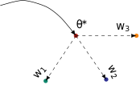
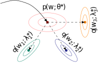
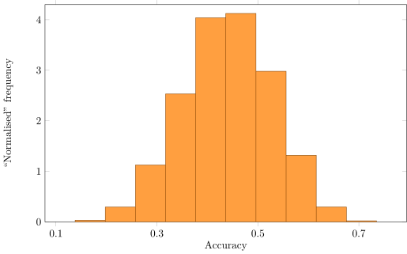
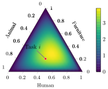

Learning with limited and uncertain data
Few-shot meta-learning & noisy label learning
Cuong Nguyen ![]()
Outline
- Past: Few-shot learning via meta-learning
- Variational meta-learning (WACV 2020)
- PAC-Bayes meta-learning (T-PAMI 2022)
- Task modelling (UAI 2021)
- Task weighting (TMLR 2023)
- On-going: Noisy label learning
- Identifiability
- Future
Meta-learning - Background
Meta-learning is to learn a hyper-parameter (e.g., learning rate or initialisation) shared across many tasks (or datasets).
Variational meta-learning
Extend the deterministic meta-learning (MAML) to a Bayesian meta-learning (VAMPIRE)


PAC-Bayesian meta-learning
Existing formulation relies on fixed training tasks.
It is generalised to even unseen tasks through PAC-Bayes framework:
Theorem: PAC-Bayesian meta-learning on unseen tasks
Given \(T\) tasks sampled from \(p(\mathcal{D}, f)\), where each task has an associated pair of datasets \((S_{i}^{(t)}, S_{i}^{(v)})\) with samples generated from the task-specific data generation model \((\mathcal{D}_{i}^{(t)}, \mathcal{D}_{i}^{(v)}, f_{i})\), then for a bounded loss function \(\ell: \mathcal{W} \times \mathcal{Y} \to [0, 1]\) and any distributions \(q(\theta; \psi)\) of meta-parameter \(\theta\) and \(q(\mathbf{w}_{i}; \lambda_{i})\) of task-specific parameter \(\mathbf{w}_{i}\): \[ \begin{aligned} & \mathrm{Pr} \Big( \mathbb{E}_{q(\theta; \psi)} \mathbb{E}_{p(\mathcal{D}, f)} \mathbb{E}_{q(\mathbf{w}_{i}; \lambda_{i})} \mathbb{E}_{(\mathcal{D}_{i}^{(v)}, f_{i})} \left[ \ell \left( \mathbf{x}_{ij}^{(v)}, y_{ij}^{(v)}; \mathbf{w}_{i} \right) \right] \le \frac{1}{T} \sum_{i = 1}^{T} \frac{1}{m_{i}^{(v)}} \sum_{k = 1}^{m_{i}^{(v)}} \mathbb{E}_{q(\theta; \psi)} \mathbb{E}_{q(\mathbf{w}_{i}; \lambda)} \left[ \ell \left( \mathbf{x}_{ik}^{(v)}, y_{ik}^{(v)}; \mathbf{w}_{i} \right) \right] \\ & \qquad + \sqrt{ \frac{ \mathbb{E}_{q(\theta; \psi)} \left[ \mathrm{KL} \left[ q(\mathbf{w}_{i}; \lambda_{i}) || p(\mathbf{w}_{i}) \right] \right] + \frac{T^{2}}{(T - 1) \varepsilon}\ln m_{i}^{(v)} }{2 \left( m_{i}^{(v)} - 1 \right)} } + \sqrt{ \frac{ \mathrm{KL} \left[ q(\theta; \psi) || p(\theta) \right] + \frac{T \ln T}{\varepsilon} }{2 (T - 1)} } \Big) \ge 1 - \varepsilon, \end{aligned} \] where: \(\varepsilon \in (0, 1]\), \(p(\mathbf{w}_{i}), \forall i \in \{1, \ldots, T\}\) is the prior of task-specific parameter \(\mathbf{w}_{i}\) and \(p(\theta)\) is the prior of meta-parameter \(\theta\).
Probabilistic task modelling
Motivation: wide variation of task performance when evaluating the same meta-learning model.
Figure 2: The histogram accuracy of 15,504 5-way 1-shot classification tasks.
Probabilistic task modelling
Employ latent Dirichlet allocation in topic modelling to model tasks in meta-learning
Analogy between topic modelling and probabilistic task modelling
| Topic modelling | Probabilistic task modelling |
|---|---|
| Topic | Task-theme |
| Document | Task (dataset) |
| Word | Data point (image) |
\[ \text{A task } T_{i} \gets \sum_{k = 1}^{K} \pi_{ik} \mathcal{N}(\mu_{k}, \Sigma_{k}). \]
Probabilistic task modelling
A task is represented as a point \((\pi_{1}, \pi_{2}, \dots, \pi_{K})\) in the latent task-theme simplex.
Figure 3: A task is a point in the latent task-theme simplex
Task weighting for meta-learning
Motivation
Tasks are un-evenly distributed \(\to\) biased towards frequently seen tasks.
Method with linear quadratic regulator
| Optimal control | Task weighting |
|---|---|
| State | Meta-parameter |
| Action | Weighting vector |
| Transition dynamics | Gradient update |
| Cost | Loss + regularisation |
TL;DR: Look ahead a few epochs and optimise for weighting vector
Noisy label learning
An annotated data point is represented as \((x, p(t | x))\).
Clean label
\[ y = \operatorname*{argmax}_{c \in \{1, \dots, C\}} p(t = c | x) \]
Noisy label
\[ \hat{y} \sim \operatorname{Categorical} \left(y; \frac{p(t | x) + \varepsilon}{Z} \right), \] where: \(\varepsilon\) is label noise and \(Z\) is the normalised constant.
\(\implies \hat{y}\) may or may not be the same as \(y\).
Identifiability in noisy label learning
Relation between \(\hat{y}\) and \(y\)
\[ p(\hat{y} | x) = \sum_{c = 1}^{C} p(\hat{y} | x, y = c) \, p(y = c | x). \]
Non-identifiability without additional assumptions
\[ \begin{aligned} p(\hat{y} | x) = \begin{bmatrix} 0.25 \\ 0.45 \\ 0.3 \end{bmatrix} & = \underbrace{\begin{bmatrix} 0.8 & 0.1 & 0.2 \\ 0.15 & 0.6 & 0.3 \\ 0.05 & 0.3 & 0.5 \end{bmatrix}}_{p_{1} (\hat{y} | x, y)} \underbrace{\begin{bmatrix} \frac{2}{11} \\ \frac{13}{22} \\ \frac{5}{22} \end{bmatrix}}_{p_{1} (y | x)} = \underbrace{\begin{bmatrix} 0.7 & 0.2 & 0.1 \\ 0.1 & 0.6 & 0.1 \\ 0.2 & 0.2 & 0.8 \end{bmatrix}}_{p_{2} (\hat{y} | x, y)} \underbrace{\begin{bmatrix} \frac{2}{15} \\ \frac{7}{10} \\ \frac{1}{6} \end{bmatrix}}_{p_{2} (y | x)}. \end{aligned} \]
Identifiability in noisy label learning
Propose: employ multiple (or multinomial) noisy labels: \[ p \left( \hat{y} | x; \pi, \rho \right) = \sum_{c = 1}^{C} \underbrace{\pi_{c}}_{p(y = c | x)} \, \underbrace{\operatorname{Mult}(\hat{y}; N, \rho_{c})}_{p(\hat{y} = c | x, y)}. \]
Claim
Any noisy label learning problem where the noisy label distribution is modelled as a multinomial mixture model is identifiable if and only if there are at least \(2C - 1\) samples of noisy label \(\hat{y}\) for an instance \(x\) with \(C\) being the number of classes.
Identifiability in noisy label learning
Generate additional noisy labels through K nearest neighbours
\[ p(\hat{y}_{i} | x_{i}) \gets \mu p(\hat{y}_{i} | x_{i}) + (1 - \mu) \sum_{k = 1}^{K} \mathbf{A}_{ik} p(\hat{y}_{k} | x_{k}), \] where \(\mathbf{A}\) is a matrix consisting of similarity coefficients between nearest neighbours.
Additional noisy labels can be sampled from the obtained \(p(\hat{y}_{i} | x_{i})\).
The EM algorithm is then used to infer \(\pi\) and \(\rho\).
Future plan
- Investigate the noisy label learning further, including:
- quality of annotators (e.g., crowd-sourcing)
- bias caused by annotators (e.g., fairness)
- integrating prior or feedback to improve learning (e.g., empirical Bayes)
- Collaborate for grant writing
- Supervise higher-degree-by-research students